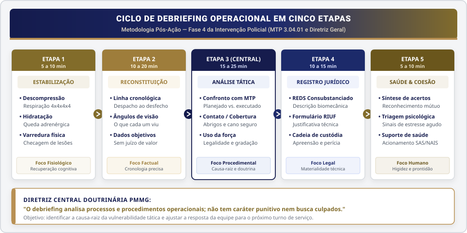

Análise Pós-Ação (AAR), Gestão de Aprendizagem Operacional e Preservação da Higidez da Guarnição (MTP 3.04.01)
Na doutrina da PMMG, a intervenção policial não encerra na entrega do preso ou fechamento formal do boletim. A Fase 4 é a Avaliação (MTP 3.04.01): procedimento técnico e impessoal em que a guarnição analisa o desempenho da equipe, consolida acertos e identifica causas-raiz de vulnerabilidades para evitar a repetição de falhas no próximo turno de serviço.
O debriefing operacional analisa processos e decisões, não pessoas. Não se confunde com sindicância nem apuração disciplinar. O foco exclusivo é aperfeiçoar a resposta técnica da fração.
Estrutura a sequência real dos fatos sob estabilização fisiológica, minimizando distorções perceptivas e lacunas involuntárias de memória provocadas pela descarga adrenérgica.
A guarnição deve observar a sequência metodológica padronizada para a condução da análise pós-ação:

Figura 1 — Sequência Metodológica das Cinco Etapas do Debriefing Operacional. Clique na imagem para expandir em tela cheia. (Fonte: MTP 3.04.01/2020-CG / US Army AAR)
Varredura mútua de ferimentos, hidratação e respiração quadrada (4x4x4x4) para redução da frequência cardíaca e normalização autonômica antes de iniciar avaliações críticas.
Construção da linha do tempo cronológica objetiva do acionamento ao desfecho, integrando os campos de visão de cada integrante sem emissão de juízos de valor.
Confronto entre a doutrina do MTP e a ação executada: emprego de abrigos, controle de cano, setores da canga e conformidade da gradação do uso da força.
Registro preliminar das informações estritamente necessárias à segurança imediata, preservação de indícios materiais e cadeia de custódia (RIUF e dados essenciais do REDS).
Reconhecimento das condutas técnicas corretas, triagem de indicadores de estresse agudo e acionamento oportuno do SAS/NAIS quando indicado.
Em vez de discussões dispersas, o facilitador conduz a análise da ocorrência articulando quatro perguntas centrais, examinadas sob critérios técnicos integrados:
Qual era o plano tático inicial, a missão atribuída à viatura e qual conduta padrão é preconizada pelo MTP aplicável àquele cenário?
Qual foi a dinâmica real verificada, as variáveis do terreno, as ações e reações do agressor e as decisões de emprego de força adotadas?
Quais fatores situacionais, lapsos de comunicação na canga ou perda de posicionamento causaram divergência entre o previsto e o executado?
Quais procedimentos corretos devem ser padronizados e qual vulnerabilidade técnica demanda correção imediata antes do próximo turno de serviço?
Ao responder às 4 perguntas, o facilitador aplica três filtros em conjunto: a Dimensão Tática (abrigos balísticos, controle de cano e setores de tiro); a Dimensão Procedimental (fundamentação da suspeita, clareza verbal e escala do uso da força); e a Dimensão Fisiológica (impacto do estresse na atenção e na motricidade fina).
A psicologia aplicada ao combate policial (Artwohl & Christensen; Grossman; Siddle) demonstra que o cérebro sob estresse agudo de sobrevivência não grava nem recupera memórias de forma linear imediata:
Sob frequência cardíaca superior a 145–175 bpm e descarga massiva de catecolaminas (adrenalina e noradrenalina), a amígdala cerebral assume a resposta de sobrevivência. O córtex pré-frontal — responsável pelo raciocínio lógico, cálculo cronológico preciso e linguagem formal estruturada — sofre inibição temporária.
O hipocampo não registra o evento como uma filmagem contínua. O policial experimenta foco extremo na ameaça letal imediata (visão em túnel) e lacunas involuntárias de memória sobre detalhes periféricos (quantidade exata de tiros disparados, posicionamento milimétrico do parceiro ou fração de segundos decorrida).
Diante das lacunas de memória, o cérebro tende a racionalizá-las, preenchendo os vazios com o que o militar presume ter acontecido, com base em hábitos de treino, e não com o que foi efetivamente percebido. O risco cresce quando se exige, ainda sob efeito agudo do estresse, uma narrativa exaustiva e sem lacunas — e não decorre da confecção do histórico do REDS em si, que é etapa normal e imediata do rito.
Quando declarações colhidas sob estresse agudo são confrontadas posteriormente com laudos periciais ou imagens de câmeras operacionais (bodycams), divergências involuntárias de boa-fé são erroneamente interpretadas como mentira ou falsidade ideológica em sindicâncias e processos criminais.
O rito de apuração não comporta uma regra artificial de espera — ele já se desenvolve em atos sucessivos, naturalmente espaçados pela própria tramitação processual e conduzidos por autoridades distintas:
1. Histórico do REDS: Confeccionado de imediato pelo próprio policial condutor da ocorrência, registrando os fatos conforme percebidos até o momento da entrega.
2. Oitiva na PCMG: Prestada posteriormente, na condição de condutor da ocorrência, perante a autoridade de polícia judiciária.
3. Interrogatório no IPM: Quando a atuação demandar a lavratura de Auto de Prisão em Flagrante (APF) pelo próprio policial militar, o interrogatório é realizado no âmbito do Inquérito Policial Militar.
O intervalo entre esses atos, decorrente do próprio encaminhamento processual, já favorece um relato mais completo nas fases seguintes. Eventuais lacunas percebidas no histórico inicial do REDS — efeito do sequestro amigdalar e da amnésia lacunar natural ao evento de alto estresse — não configuram má-fé e devem ser contextualizadas, nunca tratadas como contradição deliberada, quando posteriormente confrontadas com laudos periciais ou imagens de câmeras operacionais.
O debriefing se adapta à complexidade da ocorrência e organiza a participação técnica de cada integrante:
Realizado na sede da fração logo após o turno pelo Comandante da viatura. Focado na verificação de integridade física, descompressão, cronologia básica e levantamento dos dados preliminares de segurança.
Conduzido em ocorrências de maior complexidade (disparos de arma de fogo, lesões graves ou ocorrências multissetoriais). Analisa a coordenação sistêmica, gestão de recursos e lições aprendidas institucionais.
| Função | Responsabilidade no AAR | Atitude Operacional Esperada |
|---|---|---|
| Comandante / CPU | Facilitar a discussão com foco exclusivo em processos operacionais, preservar o ambiente não punitivo e consolidar as conclusões técnicas. | Postura aberta e técnica; veda ofensas, ironias ou repreensões disciplinares durante o debate. |
| Policial de Contato | Relatar a dinâmica frontal com o abordado, a clareza dos comandos verbais e os fatores perceptivos de decisão no emprego de força. | Fidelidade aos fatos ao expor dificuldades motoras ou hesitações vivenciadas sob estresse. |
| Policial de Cobertura | Apresentar a leitura panorâmica da retaguarda, movimentação no entorno, gerenciamento de distâncias e setores de tiro. | Objetividade no relato da segurança perimetral e proteção mútua da canga. |
A consolidação do aprendizado exige rigor no método e articulação direta com a doutrina da corporação:
Utilização da sessão para atribuir culpas individuais e antecipar sanções. Efeito adverso: Quebra da confiança na liderança, ocultação de quase-acidentes e omissão de dados críticos pela equipe.
Validação da ocorrência apenas pelo resultado favorável (ausência de baixas), sem analisar falhas de cano e perda de abrigos. Efeito adverso: Falsa sensação de segurança que precede o acidente no turno seguinte.
Axioma Doutrinário PMMG: O resultado favorável em ocorrência com desvio de procedimento não valida o erro tático. A análise deve ser constante, impessoal e fundamentada na norma técnica.
Normatização ABNT NBR 6023 — Ordenação Alfabética Rigorosa